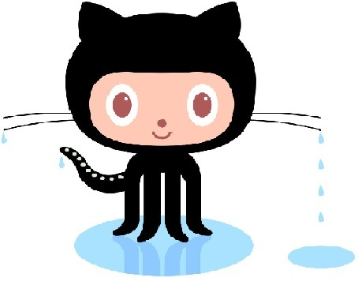

All About Github
- Q. What is a version control system?
- A. Version control, also known as source control,
is the practice of tracking and managing changes to software code. Version control systems are software tools that help software teams manage changes to source code over time.
- Q. What is Git?
- A. Git is a free and open source distributed version control system designed to handle everything from small to very large projects with speed and efficiency.
- Q. What is Github?
- A. GitHub is a code hosting platform for version control and collaboration. It lets you and others work together on projects from anywhere.
- Q. What is the difference between Git and Github?
- A. While Git is a tool that's used to manage multiple versions of source code edits that are then transferred to files in a Git repository,
GitHub serves as a location for uploading copies of a Git repository.
- Q. Who started Github and how was it started?
- A. Wanstrath and Preston-Werner needed GitHub for their own work, and so they developed their tool out of necessity. The two men quickly identified a major problem in their work—forking code branches
and collaborating on programming projects—and devised a solution that met their needs. What was brilliant about Wanstrath and Preston-Werner’s solution is that every software developer,
regardless of programming language or operating system or job role, experienced these major problems. This represented an immense potential market for their future product.
- Q. What company owns it now?
- A. Microsoft
- Q. How mch does a Github account cost?
- A. With GitHub Free for personal accounts, you can work with unlimited collaborators on unlimited public repositories with a full feature set,
and on unlimited private repositories with a limited feature set. With GitHub Free, your personal account includes: GitHub Community Support.
- Q. What is an Octocat?
- A. Octocat, the mascot of the source-code hosting service GitHub. Octocat, part cat, part octopus character in Splided (TV series) Octocat Adventrue, a five-part animated video by David OReilly (artist).
Git/Github terms:
- repository - a central location in which data is stored and managed
- commit - the updating of a record in a database
- fork - to take the source code from an open source software program and develop an entirely new program
- push - the delivery of information on the Web that is initiated by the information server rather than by the information user or client
- pull requests - an event that takes place in software development when a contributor/developer is ready to begin the process of merging new code changes with the main project repository
- workflows - a sequence of tasks that processes a set of data through a specific path form intitiation to completion
- issues - a unit of work to accomplish an improvement in a data system
- raw button - the button in Github that allows users to view the contents of a file in its raw, unrendered form
- blame button - a feature on Github that allows users to view the revision history of a file and see who made each change to the file and when
